Using the recurse package to analyze revisitations in animal movement data
Chloe Bracis
2018-03-01
Overview
The recurse package can be used to analyze animal trajectory data to look for returns to a previously visited area, i.e. revisitations. These revisits cold be interesting ecologically for a number of reasons. For example, they could be used to identify nesting or denning sites or important resource locations such as water points. Other scenarios include trapline foraging behavior, large-scale movement patterns like migration, and predator-prey interactions.
The recurse package is flexible and supports identifying revisitations of the trajectory itself for single or multiple individuals as well as pre-specifying locations of interest for which to calculate revisitations. In addition to the number of revisits to each location, additional metrics are calculated including the residence time at each location and the time between revisits.
Input data
The recurse package can work with trajectory data in the move package format (Move or MoveStack object) or the user can provide the data as a data frame with four columns: x, y, timestamp, and id. The first two columns give the (x,y) location of the animal. The timestamp should be in POSIXct or POSIXlt format, and the id identifies the individual. In the case of a single individual, the id can either be the same for every row (the default case) or provide some categorical variable by which to segment the trajectory into sections for analysis (similar to the idea of a burst in the move package).
It is important to consider the projection of the data. Since the revisits are counted within a radius around each location, an equal area projection would ensure similar size comparisons. An equidistant projection is also a reasonable option and would preserve step lengths in the movement trajectory. A geographic projection (i.e., latitude/longitude) is not recommended.
Calculating revisits with one individual
We will illustrate the functionality of the package with a simulated data set included in the package. The color of the trajectory changes with time (yellow, green, blue, purple), and one can see some areas are visited multiple times.
require(recurse)
require(scales)
require(sp)data(martin)
plot(martin$x, martin$y, col = viridis_pal()(nrow(martin)), pch = 20,
xlab = "x", ylab = "y", asp = 1)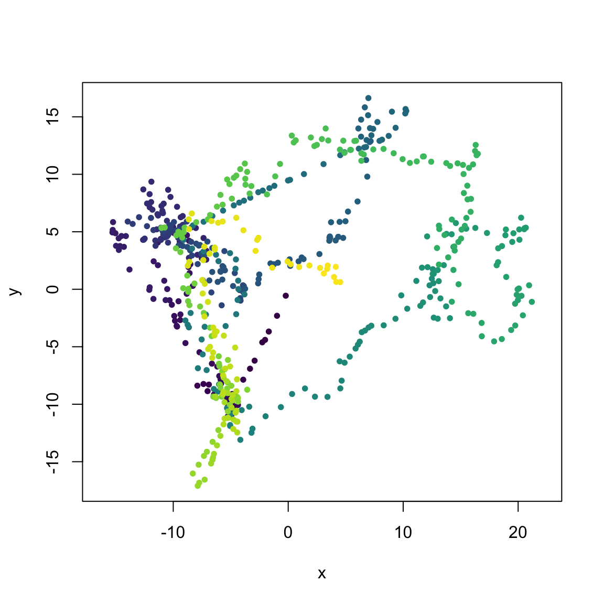
Now we are ready to calculate the recursions. The only required parameter is the radius. For each point in the trajectory, a circle of radius R is drawn around that point. Then the number of segments of the trajectory passing through that circle is counted, this is the number of revisits, so each point will have at least one revisit (the initial visit). For each revisit, the time spent inside the circle is calculated, as well as the time since the last visit (NA for the first visit). In order to calculate the time values, the crossing time of the radius is calculated by assuming linear movement at a constant speed between the points inside and outside the circle.
Selecting the radius
The units for the radius are those of the (x,y) coordinates (e.g., meters in the case of a UTM projection). The radius should be set according to the question of interest. That is, to identify nesting and roosting sites, when the animal isn’t moving, a very small radius would make sense, though importantly the radius should still be larger than the measurement error. For questions involving foraging dynamics, on the other hand, a radius matched to the average patch size might make sense. It’s also important to consider the sampling interval of the data, hourly in the case of our simulated data. In general the radius should be large enough that multiple points of the trajectory will be inside depending on the question of interest (i.e., at the locations of interest). Here we’ve selected a radius of 2.
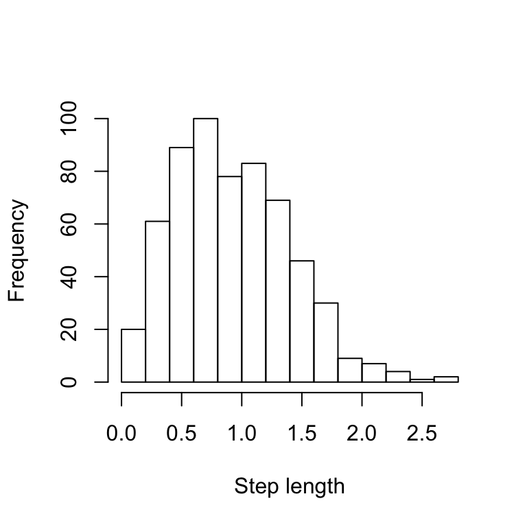
While it is best if the question drives selecting the radius size, that may not always be possible. For example, we might be interested in revisits to foraging locations but not have a good estimate of patch size. In this case, it could make sense to explore a variety of radii, which we investigate later in this vignette.
Output data
The recurse object returned by the getRecursions() function contains a vector the same length as the data with the number of revisitations for each location. One way this data can be visualized is spatially.
martinvisit = getRecursions(martin, 2)
par(mfrow = c(1, 2), mar = c(4, 4, 1, 1))
plot(martinvisit, martin, legendPos = c(13, -10))
drawCircle(-15, -10, 2)
hist(martinvisit$revisits, breaks = 20, main = "", xlab = "Revisits (radius = 2)")
summary(martinvisit$revisits)## Min. 1st Qu. Median Mean 3rd Qu. Max.
## 1.0 2.0 5.0 5.9 10.0 18.0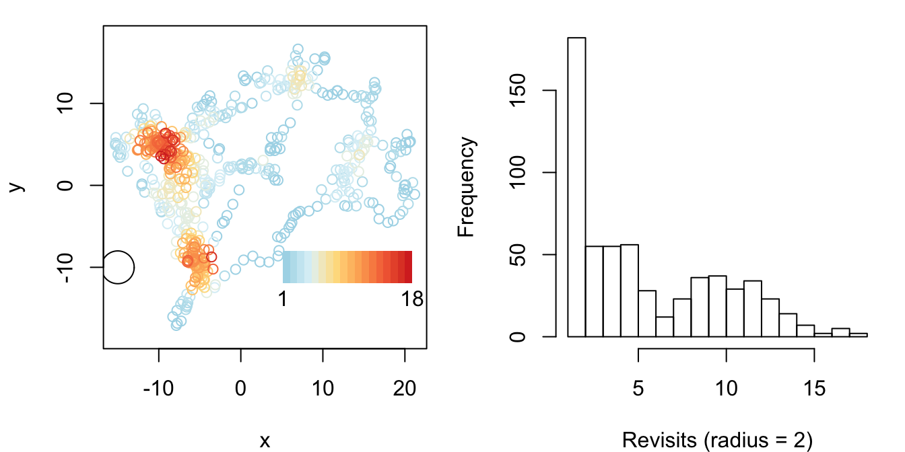
Additional statistics
The total residence time at each location, that is the sum of the individual visit durations, is provided in the residenceTime vector. Note that for points near the beginning or end of the trajectory, this will be an underestimate since the trajectory begins or ends inside the radius. A number of additional statistics are calculated per visit in the revisitStats data frame (note that the verbose = TRUE option must be enabled, which is the default).
head(martinvisit$revisitStats)## id x y coordIdx visitIdx entranceTime
## 1 martin -0.2133508 -0.5617622 1 1 2000-01-01 02:00:00
## 2 martin -0.9737603 -2.3074132 2 1 2000-01-01 02:00:00
## 3 martin -1.6891520 -3.6776613 3 1 2000-01-01 02:45:39
## 4 martin -2.0120984 -4.4038123 4 1 2000-01-01 03:13:10
## 5 martin -2.2562799 -4.6164649 5 1 2000-01-01 03:24:54
## 6 martin -2.9224916 -6.2105250 6 1 2000-01-01 05:04:37
## exitTime timeInside timeSinceLastVisit
## 1 2000-01-01 03:03:43 1.062200 NA
## 2 2000-01-01 04:34:20 2.572441 NA
## 3 2000-01-01 06:31:33 3.764928 NA
## 4 2000-01-01 06:59:11 3.766921 NA
## 5 2000-01-01 07:20:25 3.925444 NA
## 6 2000-01-01 09:02:44 3.968398 NAEach row gives the metrics for one visit. The id specifies the animal making the visit. The x and y locations correspond to the location of the focal coordiate (the center of the circle). The focal coordinate is also specified by the coordIdx column, which gives the index of the focal coordinate into the data frame (either the movement trajectory or the list of specified locations). The visitIdx gives the index of which visit this is to the focal coordinate (so the number of revisits corresponds to the highest visit index). The entrance time and exit time are the times calculated for crossing the radius by interpolating between the points inside and outside the radius. Finally, the timeSinceLastVisit is NA for the first visit and then calculated as the time outside the radius between visits for subsequent visits.
These additional metrics can be examined on a per visit basis. For example, one could examine the correlation of visit length with visit entrance time. In this case there does not appear to be a strong pattern.
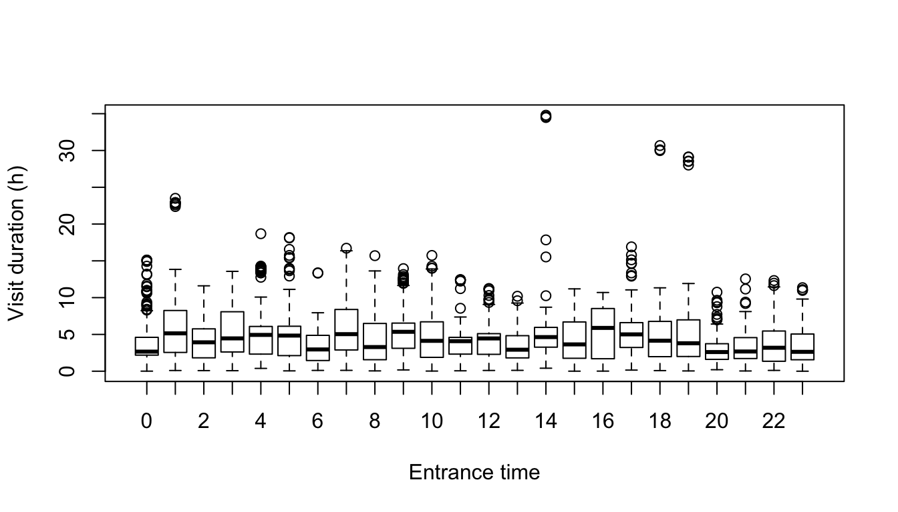
Another metric that is calculated is time since last visit. This can also be examined to look for patterns in intervisit interval or among locations.
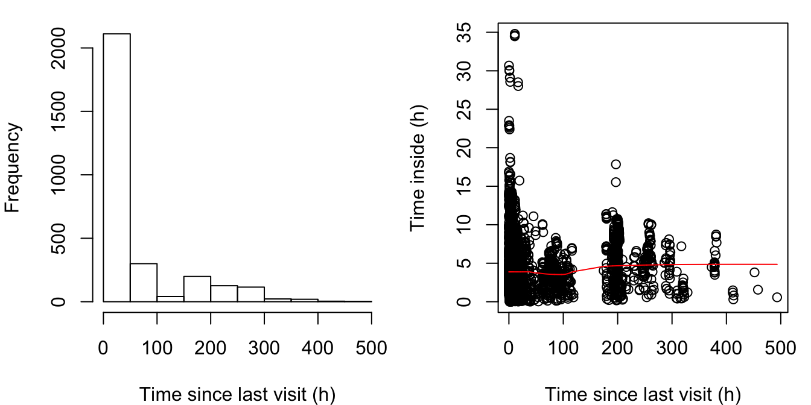
Multiple individuals
Suppose we have tagging data from another individual, wren, released at the same time and location as martin. Here we plot martin in red and wren in dark blue.
data(wren)
animals = rbind(martin, wren)
plot(animals$x, animals$y, col = c("red", "darkblue")[as.numeric(animals$id)],
pch = ".", xlab = "x", ylab = "y", asp = 1)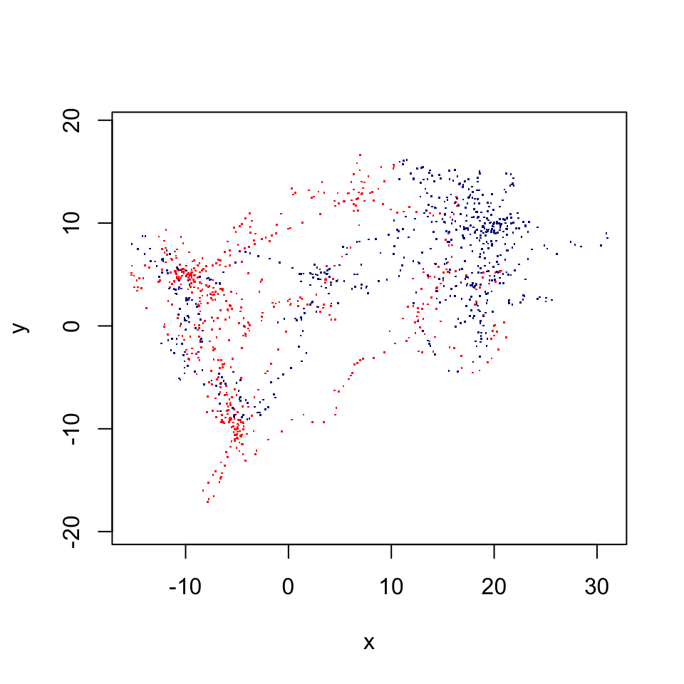
Recursions can also be calculated on the population level. If multiple individuals are passed to getRecursions() or getRecursionsAtLocations() (specified either through the id column of a data frame or using a MoveStack object), then the revisits at each location are calculated across all individuals. This can be useful for finding locations that are important across the population (e.g., watering holes or foraging areas) versus to a single individual (e.g., dens).
popvisit = getRecursions(animals, 2)
head(popvisit$revisitStats)## id x y coordIdx visitIdx entranceTime
## 1 martin -0.2133508 -0.5617622 1 1 2000-01-01 02:00:00
## 2 wren -0.2133508 -0.5617622 1 2 2000-01-01 02:00:00
## 3 wren -0.2133508 -0.5617622 1 3 2000-01-10 14:54:22
## 4 martin -0.9737603 -2.3074132 2 1 2000-01-01 02:00:00
## 5 martin -1.6891520 -3.6776613 3 1 2000-01-01 02:45:39
## 6 wren -1.6891520 -3.6776613 3 2 2000-01-10 08:49:32
## exitTime timeInside timeSinceLastVisit
## 1 2000-01-01 03:03:43 1.062200 NA
## 2 2000-01-01 02:57:53 0.964944 NA
## 3 2000-01-10 21:04:55 6.175851 227.9414
## 4 2000-01-01 04:34:20 2.572441 NA
## 5 2000-01-01 06:31:33 3.764928 NA
## 6 2000-01-10 12:01:32 3.200042 NAplot(popvisit, animals, legendPos = c(15, -10))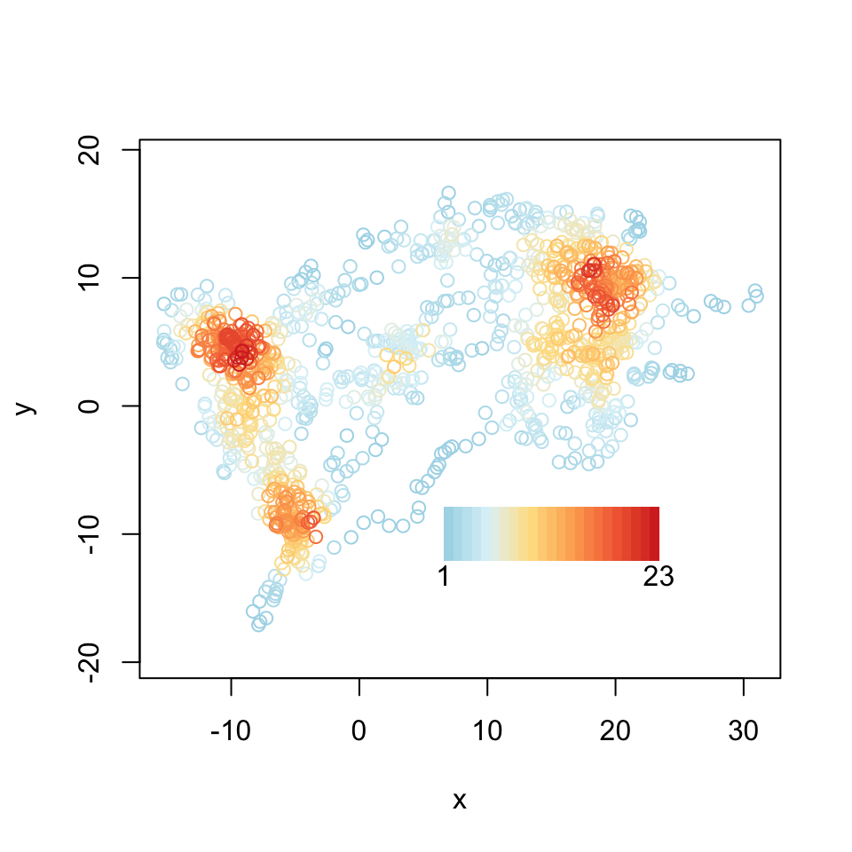
The trajectories for all the individuals are plotted together with the jointly determined revisits. The revisitStats data frame lists the id of the individual that visit applies to. The coordIdx gives the index in the data frame of all individuals for the location being examined.
Additional options
There are further options and methods available that may be of use.
Specifying locations
Rather than using all locations in the trajectory, it is also possible to specify specific locations at which to calculate revisits. For example, perhaps we are interested in determining if martin comes back to the release location at (0,0) or some other specific locations, such as (10, 10) or (20, 10) that are of known interest. For this it is possible to use the getRecursionsAtLocations() function, which operates very similarly to the getRecursions()function.
locations = data.frame(x = c(0, 10, 20), y = c(0, 10, 10))
locvisit = getRecursionsAtLocations(wren, locations, 2)
locvisit$revisits## [1] 2 2 12From this we can see that the release location had 2 visits, and the other two locations has 2 and 12 respectively. All the same information is available, such as residenceTime and revisitStats, as shown previously with getRecursions().
Clustering
If specific locations are not known a priori, they can also be identified from the recursion analysis using clustering. Here we give a simple example, but refer the interested reader to the many introductions to clustering in R that describe different packages available.
For example, one might want to identify important sites known to be visited frequently (e.g., nests, dens, water holes, foraging patches, roosts, haulouts, etc.) in a systematic way rather than using visual identification methods, which may not be feasible for large amounts of data. The identification of these sites may be the end goal itself, or a preliminary step in a larger analysis.
Here we use K-Means clustering to cluster the (x,y) coordinates of the top 20% of locations by number of revisists for both martin and wren together. We have to specify the number of clusters as 3, though there are techniques for determining the number of clusters. The resulting cluster centers could be used with getRecursionsAtLocations() described above.
visitThreshold = quantile(popvisit$revisits, 0.8)
popCluster = kmeans(animals[popvisit$revisits > visitThreshold,c("x", "y")], centers = 3)
plot(animals$x, animals$y, col = c("red", "darkblue")[as.numeric(animals$id)],
pch = ".", xlab = "x", ylab = "y", asp = 1)
with(animals[popvisit$revisits > visitThreshold,],
points(x, y, col = c(alpha("red", 0.5), alpha("darkblue", 0.5))[as.numeric(id)],
pch = c(15:17)[popCluster$cluster]) )
legend("topleft", pch = 15:17, legend = paste("cluster", 1:3), bty = "n")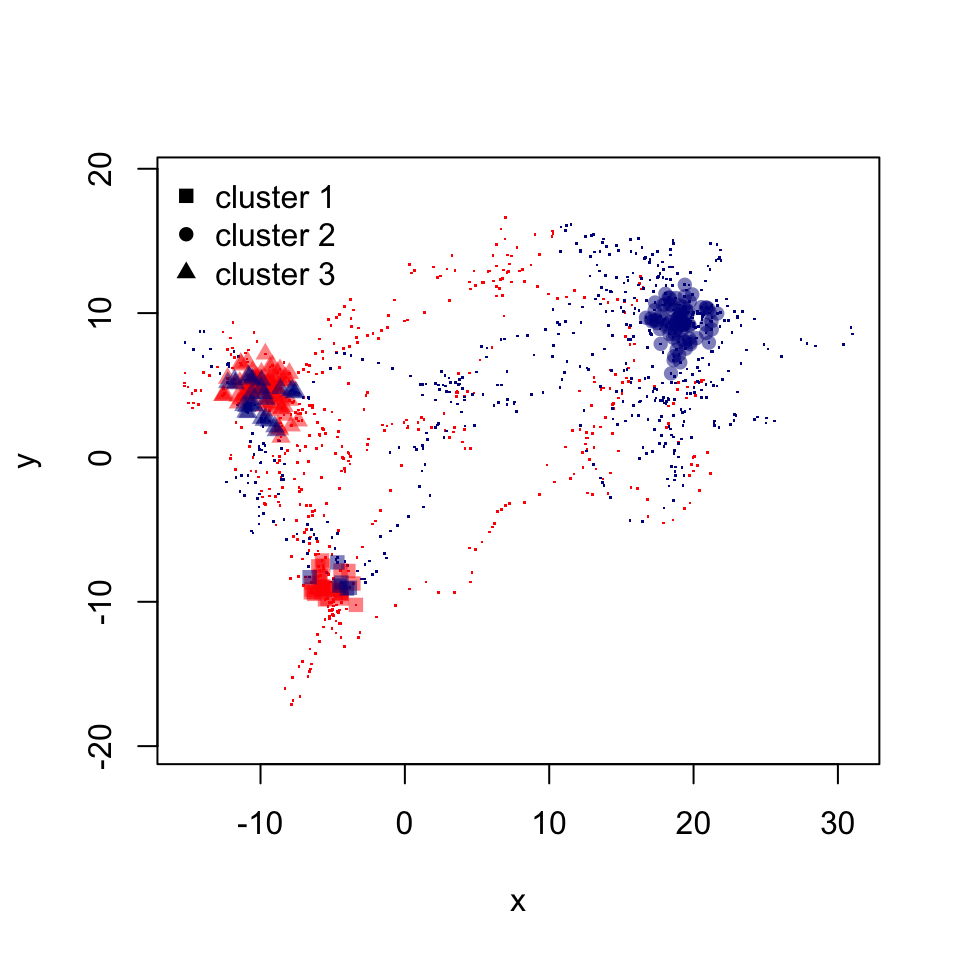
Polygons
As an alternative to using circular zones around trajectory or other points, one can specify a polygon in which to calaculate revisits and residence time. This could be useful if there was a specific landscape feature where the precise boundary is important, such as a protected area, land use type, or territory.
There are several important restrictions that are important to note when using the polygon feature. First, the polygon must be convex (that is, any point on a line drawn from one point in the polygon to another point in the polygon will be inside the polygon). Secondly, only a single polygon at a time may be analyzed.
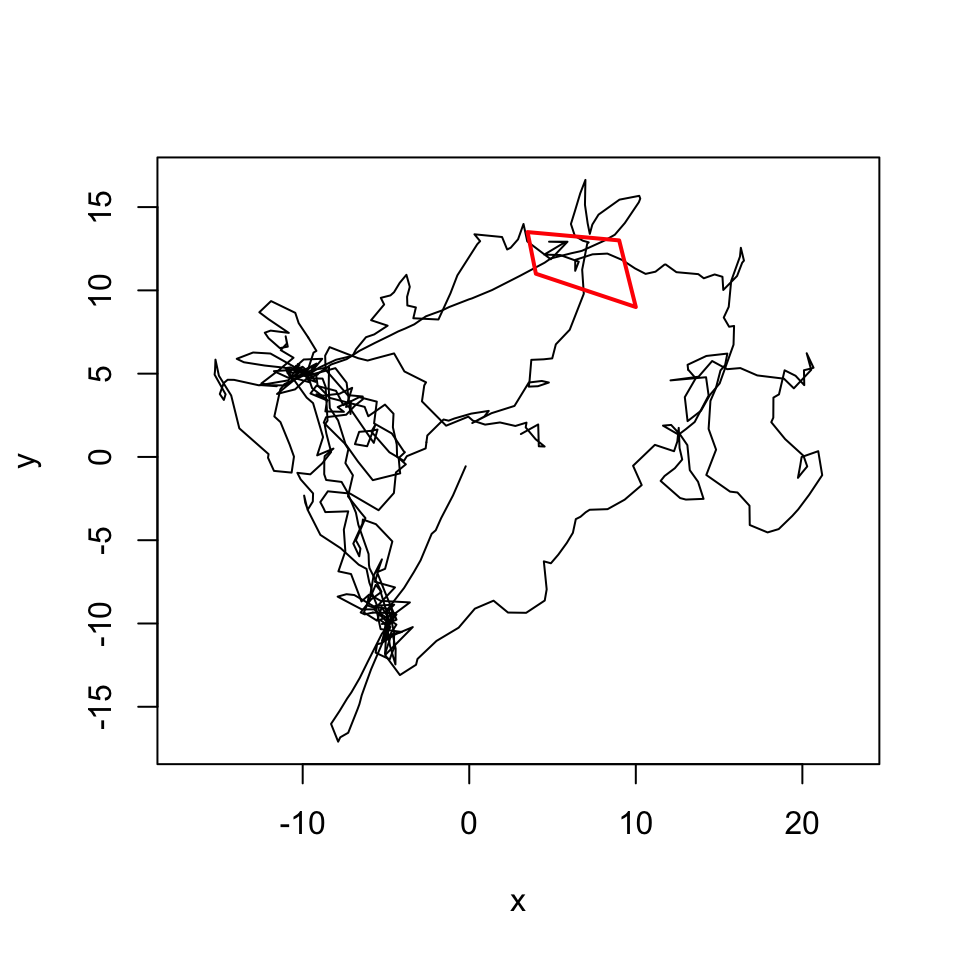
So, for example, if we are interested in the number of visits and time spent by martin in a protected area indicated by the red polygon above, we can use the getRecursionsInPolygon method to examine this.
getRecursionsInPolygon(martin, protectedArea)## $revisits
## [1] 3
##
## $residenceTime
## Time difference of 24.35424 hours
##
## $radius
## [1] NA
##
## $revisitStats
## id x y coordIdx visitIdx entranceTime exitTime
## 1 martin NA NA 1 1 2000-01-10 09:10:22 2000-01-10 13:52:19
## 2 martin NA NA 1 2 2000-01-11 05:49:49 2000-01-11 12:24:34
## 3 martin NA NA 1 3 2000-01-18 21:48:58 2000-01-19 10:53:32
## timeInside timeSinceLastVisit
## 1 4.699204 hours NA hours
## 2 6.579081 hours 15.95842 hours
## 3 13.075954 hours 177.40676 hours
##
## attr(,"class")
## [1] "recurse" "recurse.verbose"The output of getRecursionsInPolygon is similar to that of getRecursions, and we can see that there were three visits lasting a total of about 24 hours, as well as specific information on each visit.
Threshold
Because revisits are examined within a fixed radius around locations which does not necessarily conform to the actual area of interest (e.g., a foraging patch), the threshold parameter allows the user to set a time threshold to ignore brief excursions outside the circle. The threshold parameter defaults to zero, meaning any excursion outside the radius, no matter how brief, will lead to the reentry to be counted as a new visit.
Time units and time zones
The timeunits parameter controls the units that various time spans are reported in, such as residence time, time spent within the radius per visit, and time between visits. The default is hours, and units of seconds, minutes, and days are supported.
The time zone for explicit datetimes, such as the entrance and exit times, will be that of the data passed in. Care should be taken that the times and time zones are match that of the animal, rather than defaulting to UTC or the local time zone of the computer used for the analysis.
Specifying intervals for residence time
The residenceTime vector in the recurse object gives the residence time in the vicinity of a location for the entire trajectory. However, it may be desirable to calculate the residence time for a shorter interval. Sometimes the biologically relevant scale may be different, such as seasons, or large gaps between visits (e.g., a seasonal migrant) may make splitting up the residence time preferable. This would also allow for comparisons before and after a treatment.
In this case the user may post-process the results in the recurse object using the calculateIntervalResidenceTime function. For example, we may be interesting in comparing residence times between the first and second halves of martin’s trajectory.
breaks = martin$t[c(1, nrow(martin)/2, nrow(martin))]
beforeAfterResTime = calculateIntervalResidenceTime(martinvisit, breaks = breaks,
labels = c("before", "after"))
head(beforeAfterResTime)## before after
## 1 1.062200 0
## 2 2.572441 0
## 3 3.764928 0
## 4 3.766921 0
## 5 3.925444 0
## 6 3.968398 0tail(beforeAfterResTime)## before after
## 595 1.278276 8.496443
## 596 0.000000 7.602836
## 597 0.000000 6.634396
## 598 0.000000 7.163366
## 599 0.620835 7.680273
## 600 1.007248 8.731910Selecting the radius, revisited
Testing different radii
Earlier in this vignette, we discussed how to select the radius. As this very much depends on the data and the question, there are no fixed rules for this. One thing to consider, even in the case of a specific question that determines the radius, is a sensitivity analysis to check whether the precise value of radius has a large effect on the results. Comparing multiple values for the radius is also a possible solution when the spatial scale of the question is unknown (e.g., if the foraging patch size is unknown). One thing to keep in mind when considering multiple radii is that the area evaluated for revisits will increase as a square of the radius.

We can examine how the number of revisitations changes with the changing radius size. Here we used a linear sequence of radii, though a linear sequence of areas may be a better choice in many situations. The radii go from 0.5 to 20 in increments of 0.25. We use such large radii to illustrate what happens, but it does not actually make sense to use a radius that anywhere approaches the size of the study area.
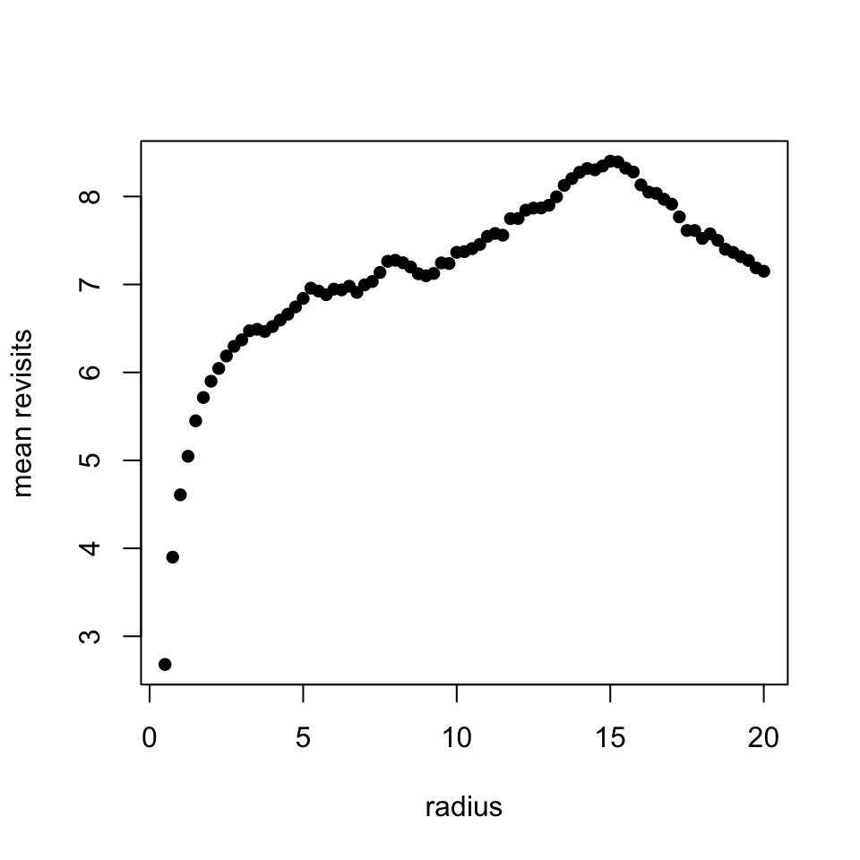
With increasing radii, the number of revisits correspondingly increases as one would expect. A larger radius is in some way analogous to setting a larger trap to catch revisits. More is not necessarily better, however, as one may be interested in only revisits to a very specific location.
Eventually, around a radius of about 15, the number of revisits actually starts to decline. This is because the radius gets so big that it encompasses most of the trajectory, making it difficult to actually leave and re-enter. In fact, the largest distance between points is about 38, meaning even restricting ourselves to just a radius of a quarter of that, 9.5, would still have a diameter of about half the largest net displacement in the trajectory. Without a specific ecological motivation, even this is probably too large a radius to be meaningful.
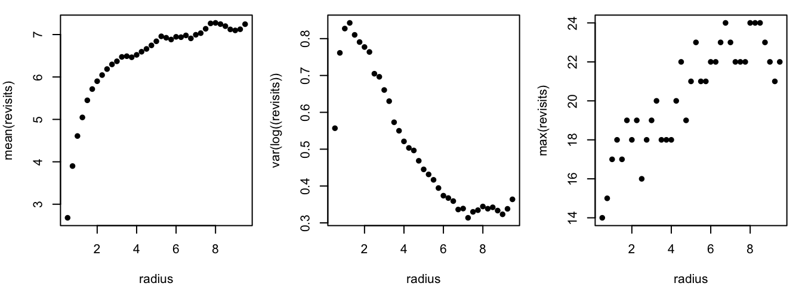
Now lets examine in more detail how the number of revisits changes as the radius changes. At the smallest radius of 0.5 there are few revisits, and a radius this small is likely only useful for examining very specific locations such as a nest. Here we are using simulated data without error, but it is important to remember not to use a radius smaller than the measurement error (though smoothing or filtering the data could also be an option). The number of revisits increases dramatically until a radius of 2, then continues to gradually increase interspersed with plateaus.
It is also interesting to see how the variance among revisitations changes with the radius, that is, how similar or different are the number of revisits across locations. The variance is lowest at the smallest radius of 0.5, as most locations have few revisits, then peaks around a radius of 1.5. The variance then declines, and becomes quite small for radii above 4, meaning that with larger radii, the number of revisits at different locations is becoming more similar. The maximum number of revisits, on the other hand, continues to increase as the radius increases.
It is also important to look at the revisits spatially, because looking at summary statistics can hide important differences in spatial patterns of revisitation among radii.
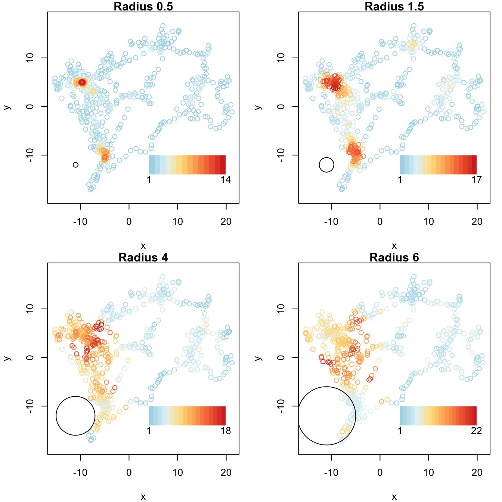
A very small radius of 0.5 pinpoints the few specific sites with many revisits. A slightly larger radius, around 1.5–2, picks up the same hot spots of revisitation and surrounding areas. It also uncovers additional areas on the left side with not as many revisits. However, as the radius increases to 4 and 6, the spatial areas of the highest revisits start to switch for the locations identified with smaller radii to the area surrounding them, suggesting that these radii are too large in this instance.
Effect of trajectory sampling regime
Another concern is the effect of the trajectory sampling regime on the recursion analysis. While the recursion method is robust to some gaps in the data, if there is bias affecting when or where the gaps are, that will in turn bias the resulting analysis. For example, if there is less likely to be a signal in dense forest cover, recursions in those areas may also be underestimated. Sometimes tracking units use duty cycling (turning off for fixed or variable periods) to save battery life. For example, if the unit turns off at night and the animal doesn’t move, this will not affect results, but if the animal does indeed move during those times, bias is possible.
Random gaps
We first examine the effect of randomly removing locations to create gaps on the recursion analysis. The full trajectory for martin has 600 locations, and we show the effect of removing one-sixth, one-third, and half those locations. Here we use a radius of 2 to match the earlier analysis.
par(mfrow = c(2, 2), mar = c(4, 4, 2, 1))
nLocs = c(600, 500, 400, 300)
martin.radomgap = NULL
martinvisit.randomgap = NULL
for (i in 1:length(nLocs))
{
martin.radomgap[[i]] = martin[sort(sample(1:600, nLocs[i], replace = FALSE)),]
martinvisit.randomgap[[i]] = getRecursions(martin.radomgap[[i]], radius = 2)
print(paste(nLocs[i], "locations, mean revisits:", mean(martinvisit.randomgap[[i]]$revisits)))
plot(martinvisit.randomgap[[i]], martin.radomgap[[i]],
main = paste(nLocs[i], "locations"), legendPos = c(12, -10))
}## [1] "600 locations, mean revisits: 5.9"## [1] "500 locations, mean revisits: 5.628"## [1] "400 locations, mean revisits: 5.17"## [1] "300 locations, mean revisits: 4.77333333333333"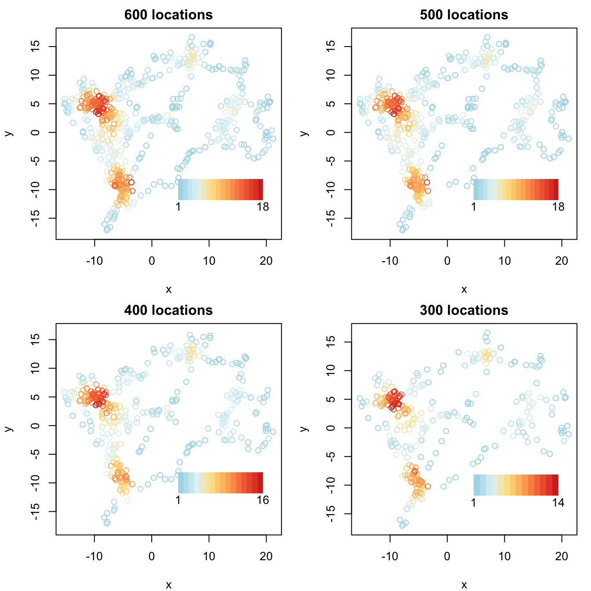
The mean number of revisitations declines, as some revisits are missed due to the missing data. However, qualitatively, the picture looks very similar, with the same highly visited locations being identified, even with only half the data.
Biased gaps
Next we consider a case with the same amounts of data being removed, but the removal is biased rather than random. In this case the bias is spatial, but other forms of bias in missing data that correlate to behavior could also influence the results, such as temporal or weather-related.
par(mfrow = c(2, 2), mar = c(4, 4, 2, 1))
nLocs = c(600, 500, 400, 300)
martin.biasgap = NULL
martinvisit.biasgap = NULL
xyVal = order(1:600, -3 * martin$x + martin$y + rnorm(600, 0, 5), decreasing = TRUE)
for (i in 1:length(nLocs))
{
martin.biasgap[[i]] = martin[sort(xyVal[1:nLocs[i]]),]
martinvisit.biasgap[[i]] = getRecursions(martin.biasgap[[i]], radius = 2)
print(paste(nLocs[i], "locations, mean revisits:", mean(martinvisit.biasgap[[i]]$revisits)))
plot(martinvisit.biasgap[[i]], martin.biasgap[[i]],
main = paste(nLocs[i], "locations"), legendPos = c(12, -10))
}## [1] "600 locations, mean revisits: 5.9"## [1] "500 locations, mean revisits: 4.568"## [1] "400 locations, mean revisits: 3.29"## [1] "300 locations, mean revisits: 2.79333333333333"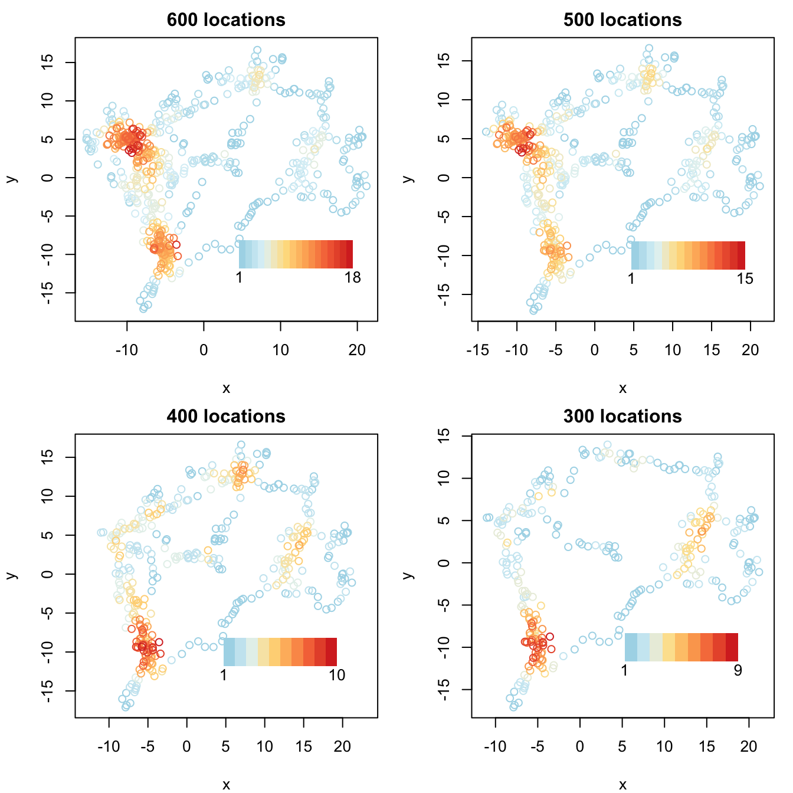
The drop off in mean number of revisits is steeper than in the random gap case. With small amounts of missing data, such as 500 locations, the same patterns are apparent. However, as the amount of missing data increases, such as with 300 and 400 locations, it becomes difficult or impossible to identify previously visited location in the upper left and upper portion of the landscape.
These are examples with simulated data, so they demonstrate techniques, such as examining a range of radii or the variance of the log of the revisits, as well as potential pitfalls, such as gappy or biased data. However, they should not be treated as giving fixed thresholds or values for how to select the radius or how many gaps are acceptable. Rather, they serve to illustrate the performance of the method across a range of radii and data situations and can be used as an example for how to approach these questions with other data.